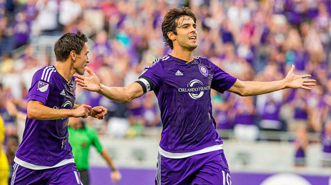

En 2015, Orlando City debutó en la liga y Kaká fue nombrado capitán del equipo. Desde el primer partido demostró su calidad al marcar un gol de tiro libre en el tiempo de descuento frente al New York City FC, consiguiendo el primer empate del club en la MLS y dejando una actuación inolvidable para la afición.
